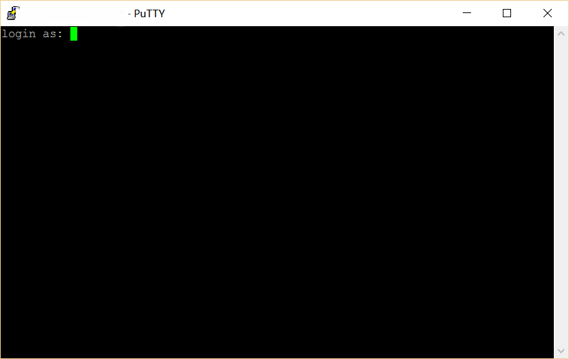

使用过一段时间的校园网之后，我决定想办法突破校园网流量和价格的限制，免费自由上网。既然学校路由给分配了ipv6地址，并且也可以访问一些网站（如北邮人之类的网站），也就是说网关只对ipv4流量进行限制，那么是不是可以使用在校外的VPS将ipv4流量转换成ipv6流量，进而实现校内用ipv6连接外网呢？经过一番查找，终于了解了如何实现这个功能。
其实网上这样的文章还不少，但是很少有针对校园网的，并且大多都说的比较高深并且简略，这里我就详细来说一下具体如何操作。
需要的部分软件在我的网盘里，提取码： ijs0
使用条件
这个方法能用的前提条件是你学校给网络可以使用ipv6，验证方法是在连接校园网并且不登录内网网关的情况下可以打开北邮人 http://bt.byr.cn/ .如果可以正常访问就可以使用下面的方法实现校园网环境下免费上网。
租用VPS
以前用过VPS的话就直接略过这段就好了。
vps的话直接上网搜就有很多，但是要注意不要选择国内的服务商，因为国内都不提供ipv6.这里我推荐几个比价实惠的：
第一个是 HostUS，官网： https://hostus.us
比较便宜并且网速也比较好，https://hostus.us/openvz-vps.html 直接点进去选择最低的配置就够用,同样建议选择洛杉矶机房，$5.65/季度，支持支付宝.并且这个网站http://www.hostus.cn 经常有便宜的购买链接，但是优惠码不多。第二个是 Host1Plus，官网： http://www.host1plus.com
可以月付，也很便宜，如果你只想先尝试一个月推荐用这个，最便宜的$2/月，支持支付宝。http://www.host1plus.com/vps-hosting 选择最低配就好,同样建议选择洛杉矶机房。另外除了最低配都可以使用优惠码，网上一搜一大堆。第三个是 Digital Ocan，官网： https://www.digitalocean.com
三个当中最稳定的，但是价格稍贵，最低$5/月，还是不便宜的，但是新用户注册激活后有$10奖励，而且成功申请到{Github Student pack]2的话，还可以得到$100。付款方式只有PayPAl和信用卡。
购买之后，安装镜像，选择ubuntu即可。记住让你输入的或者提供的密码。
在VPS上安装启动shadowsocks
连接到服务器
自行百度putty进行下载，并且在host name的地方输入你服务器的ip地址，然后点击open。Login as:后面输入root,然后输入密码，只管输入就行，它并不会显示出来。

使用HostUS需要自己配置ipv6,host1plus和digitalocean不用
1
ifconfig eth 0 inet6 add IPV6ADDR (IPV6ADDR为提供的服务器的IPV6地址)
安装启动shadowsocks
依次输入下列命令：1
2
3
4apt-get update
apt-get install python-pip
pip install shadowsocks
vi /etc/shadowsocks.json
这时应该就是在编辑文件，将下面的文字输入(先按一下ins键)1
2
3
4
5
6
7
8
9
10{
"server":"::",
"server_port":8388,
"local_address": "127.0.0.1",
"local_port":1080,
"password":"你设置的密码",
"timeout":300,
"method":"aes-256-cfb",
"fast_open": false
}
编辑完之后按 Esc,并且输入 :wq (包括冒号,即保存并退出)。
然后使用下面这个指令启动服务1
ssserver -c /etc/shadowsocks.json -d start
安装shadowsocks客户端
shadowsocks的客户端支持OS X/Windows/Android/iOS等（iOS使用完整功能需要越狱）。
客户端配置一般都很简单，只要配置一下ip地址和之前设置好的密码（加密方式选择 aes-256-cfb）即可。
本博文仅供技术交流，请勿用于其他途径，从事违法违规活动与博主无关